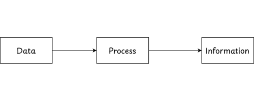
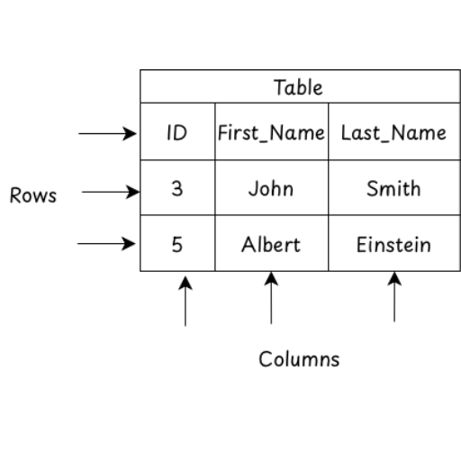
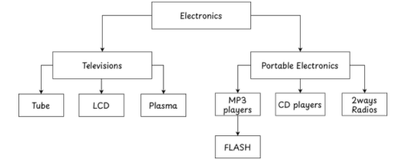
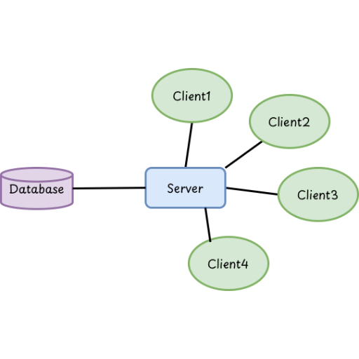
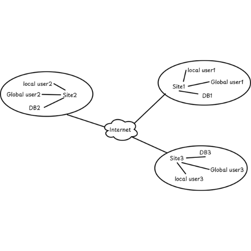

DBMS
- Data are the collection of raw facts and figures, which do not give any particular sense. It may be in the form of numbers, fig, or the alphabet.
-
For example, 11, Hari, Pokhara etc.
-
Primary Data:- Those data, which are directly collected from surveys, experiments or observation.
-
Secondary Data:- Already existing data or collected by someone else.
-
Information
- When data is processed for objectives, it becomes information. Information always provides clear meaning or sense.
- For example: Hari lives in Pokhara-11.
-
The process of converting the data into information is called data processing.

Data Processing
Difference between data and information
| Data | Information |
|---|---|
| Raw facts and figures without context. | Processed or organized data that has meaning. |
| Unprocessed, unorganized, and raw. | Processed, structured, and organized. |
| To record facts for future use. | Provide meaning and help in decision making. |
| Marks of students: 70, 85, 90; example. | Average marks of the class: 81.6; is an example. |
| Information is derived from data. | Information depends on data for its source. |
| May have little or no meaning alone. | Always meaningful and useful. |
| Qualitative or quantitative facts. | Data interpreted into a meaningful form. |
Flat File System
- It is also called file-based system, is the traditional way of keeping records of any organization in a manual filing system where information and data are stored in plain text format.
Disadvantages of Flat File System
- Data Security was poor.
- Data sharing was almost impossible.
- High maintenance cost.
- The same record was stored in more files.
Database
-
It is the collection of logically related data for a particular domain or field.

Database - In database data are organized into tabular fashion. i.e. in the form of rows and columns.
- Field or Attribute:- Field is the column of the database table.
- Record or Tuple:- Record is the row of the database table.
Database Management System (DBMS)
- As we know, a database is the collection of inter-related data. So a database management system is a general-purpose software system that allows users to create, maintain and manipulate the database.
- Some common DBMS are SQL server, Oracle, MY SQL etc.
Advantages of DBMS
- Using DBMS data stored in the database can be shared among multiple users or computers.
- The duplication or repetition of the same type of data is reduced, which is called data redundancy.
- By using DBMS, we can easily create a copy of the original file, which helps in data backup and recovery.
- By using DBMS, we can restrict the use of databases to unauthorized persons.
- It maintains correctness or accuracy in data which is called data integrity.
Application of DBMS
-
Hospital
- It is used to keep the record of the patient and doctors, to generate bills.
-
Airlines and Railways
- Airline and Railways use databases for online reservation, displaying schedules.
-
College and Schools
- Databases are used in colleges or schools to keep records of the students and teachers.
-
Telecommunication
- Telecommunication departments use databases to store the information about the communication network, records of call to generation bills, data consumption etc.
-
Companies and Organizations
- Different companies and organisations use databases to store the information about their employees, salary, tax payment etc.
Keys
- Key is the set of attributes that is used to identify the data in a table and is also used to establish a relationship with another table.
Types of Key:
-
Primary Key
- It is used to identify a row in a table uniquely.
- A primary key cannot contain null value.
- A table cannot have more than one primary key.
-
Let’s clear through an example
EMP-ID NAME ADDRESS SSN PAN-NO 101 John 20 435 123456789 102 Jane 21 899 987654321 103 Doe 22 435 123456789 104 Smith 23 899 987654321 - In the above table EMP-ID is the primary key since it is unique for each employee.
- In the table we can even select SSN and PAN-NO as primary keys since they are also unique.
-
Alternative Key
- Except the primary key, the keys that are suitable for the primary key are called Alternate keys.
- These keys are also unique. In the above employee table SSN and PAN-NO can be considered as Alternate keys
-
Candidate Key
- It is the set of attributes that uniquely identifies records in a table.
- The combination of Primary and Alternative keys.
- Here in the above employee table EMP-ID, SSN, PAN-NO are candidate keys.
-
Composite Key
- When two or more attributes together are used to uniquely identify a record, that combination is called a composite key.
- It is used when a single attribute is not enough to uniquely identify a record.
-
Foreign Key
- A foreign key is an attribute that creates a relationship between two tables.
- It refers to the Primary Key of another table.
- It helps maintain referential integrity in the database.
SQL
- SQL refers to the Structured Query Language. It is an international standard database query language for accessing and managing the data in the database.
- It was introduced and developed by IBM in 1970.
- It is not a programming language. It is just a database language.
-
SQL is made up of the sub languages, they are:
-
Data Definition Language (DDL)
- Data definition language consists of the SQL commands that can be used to define the database schema.
- Since, schema refers to the logical and visual configuration of the entire relational database. It includes names, description, records, elements, etc.
-
The DDL commands are:
-
CREATE
- This command is used to create the database and its objectives like table, index, views etc.
- Syntax: CREATE DATABASE DB_Name;
- Example: CREATE DATABASE School;
-
Similarly, if we want to create table in
CREATE TABLE TABLENAME(COLNAME1 DATATYPE, COLNAME2 DATATYPE....)
- Example:
CREATE TABLE Student(Rollno INT(3), Name VARCHAR(20), Age INT(2));
-
DROP
- This command is used to delete the database and its objectives like table, index, views etc.
- Syntax: DROP DATABASE DB_Name;
- Example: DROP DATABASE School;
-
Similarly, if we want to delete table in
DROP TABLE TABLENAME;
- Example:
DROP TABLE Student;
-
ALTER
- This is used to alter the structure of the database. For example we need to add columns in an already existing table then we can use this alter command.
- Syntax: ALTER TABLE TABLENAME ADD COLNAME DATATYPE;
- Example: ALTER TABLE Student ADD CGPA FLOAT(4);
- Similarly, for Modify an existing column, syntax:
ALTER TABLE table_name CHANGE COLUMN old_column_name new_column_name data_type;
- Example:
ALTER TABLE students CHANGE COLUMN fullname student_name VARCHAR(100);
-
TRUNCATE
- This command is used to remove all the records from the table but the structure of the table still exists.
- Syntax: TRUNCATE TABLE TABLENAME;
- Example: TRUNCATE TABLE Student;
-
RENAME
- This command is used to rename the table or columns.
- Syntax: RENAME TABLE TABLENAME TO NEWTABLENAME;
- Example: RENAME TABLE Student TO Students;
-
-
Data Manipulation Language (DML)
- The DML contains the SQL commands that deal with the manipulation of data present in the database.
-
The DML commands are as follows:
-
INSERT
- This command is used to insert the records into the table.
- Syntax: INSERT INTO TABLENAME(COLNAME1, COLNAME2, ...) VALUES(VAL1, VAL2, ...);
- Example: INSERT INTO Student(Rollno, Name, Age) VALUES(1, "Karan", 20);
-
UPDATE
- This command is used to update the records in the table.
- Syntax: UPDATE TABLENAME SET COLNAME = VAL WHERE CONDITION;
- Example: UPDATE Student SET Age = 21 WHERE Rollno =1;
-
SELECT
- This command is used to select the records from the table.
- Syntax: SELECT * FROM TABLENAME;
- Example: SELECT * FROM Student;
-
But if we want to get a student's name only then.
SELECT name FROM Student;
-
To find all the record of rollno. 1 then.
SELECT * FROM Student WHERE Rollno = 1;
-
If we want to display the name starts from letter B then.
SELECT name FROM Student WHERE name LIKE "B%";
-
Similarly, To select records where a column value ends with the letter B, then.
SELECT name FROM Student WHERE name LIKE "%B";
-
To select records where a column contains the letter B in the middle, then.
SELECT name FROM Student WHERE name LIKE "%B%";
-
To select records where a column contains the second letter B, then.
SELECT name FROM Student WHERE name LIKE "_B%";
-
DELETE
- This command is used to delete the records from the table.
- Syntax: DELETE FROM TABLENAME WHERE CONDITION;
- Example: DELETE FROM Student WHERE Rollno = 1;
-
-
Data Control Language (DCL)
-
DCL (Data Control Language) is used to control access to data in a database.
GRANT: This command is used to give permission to the user to access the data in the database.
REVOKE: This command is used to remove permission from the user to access the data in the database.
-
-
Database Model
- It is a set of rules and standards that define how the database organises or stores data.
- While designing databases we need to describe the structure of a database and how they are related to each other.
- So the database model helps to define the logical design and structure of the database.
-
Types of database model:
-
Hierarchical model
- This model is one of the oldest types of database models developed by IBM.
- In this model data are organized into an inverted tree like structure.
-
This model exhibits parent child relationship. A child can have only one parent but a parent can have more than one child.

Fig: Hierarchical model
Advantage of Hierarchical model
- This database model is easier to design.
- Searching is faster if the parent node is known.
- It support one to one and one to many relationship.
Disadvantage of Hierarchical model
- The old method does not support many to many relationships.
- It increases redundancy because the same data is to be repeated in different places.
-
Network model
- This model is similar to the hierarchical database model but the major difference is that the child node can have more than one parent node.
- In hierarchical database models there is only one parent node so to overcome this limitation the network database model is developed.
-
In this model a parent may have multiple children as well as a child having multiple parents.

Fig: Network model
Advantage of Network model
- More flexible than hierarchical models because it accepts many to many relationships.
- Simple and easy to design.
- Searching is faster because of multidirectional pointers.
Disadvantage of Network model
- In a complex program it is difficult to handle the relationship.
- Less security because of sharing data.
- Lack of flexibility and scalability.
-
Relational model
- It is the type of database model in which data is organized into tables which contain multiple rows(records or tuples) and columns(attributes or fields).
- It is the most commonly used database model and it is more flexible than hierarchical and network database models.
-
In this model there are multiple tables and are connected with each-other . Means there is a relationship between multiple tables.

Fig: Relational model
Advantage of Relational model
- It is more flexible than hierarchical database models.
- Very low chance of data redundancy
Disadvantage of Relational model
- It is more complex than other models.
- It needs more powerful computers and data storage devices.
-
Normalization
- It is a database design process in which the complex table is broken down into simple separate tables.
- This includes creating multiple tables and establishing relationships between those tables according to rules.
- For normalization the different steps are followed which are called normal forms.
Types of normalization
-
First Normal Form (1NF)
- This is the most basic level of normalization and a table is said to be in first normal form 1NF if it contains an atomic value.
- Means each table cell should contain a single value. If a table contains a multivalued attribute then it violates 1NF.
-
Let’s clear through an example.
Player_info Player_ID Player_Name Games 11 Ravi Cricket, Football 01 Aniket Cricket 12 Abhijit Football, Hockey 22 Karun Cricket -
Here, in this table Player_info there are two values in the first row and third row of the Games column so we have to convert it into 1NF as…
Player_info Player_ID Player_Name Games 11 Ravi Cricket 11 Ravi Football 01 Aniket Cricket 12 Abhijit Football 12 Abhijit Hockey 22 Karun Cricket
-
Second Normal Form (2NF)
- The table is said to be in second normal form if the table is in 1’st normal form and does not contain any partial dependency, meaning the table should be fully functional dependent.
-
Let us consider a table customer.
Customer Customer_ID Store_ID Location 01 11 Kathmandu 01 12 Biratnagar 02 11 Kathmandu 03 12 Biratnagar -
Here, in this table there is partial dependency, Location depends only on Store_ID, while the primary key is (Customer_ID, Store_ID). So, we have to remove this..
Customer_ID Store_ID 01 11 01 12 02 11 03 12 Store_ID Location 11 Kathmandu 12 Biratnagar - Now it is fully dependent on Store_ID.
-
Third Normal Form (3NF)
-
The table is said to be in 3rd normal form if it satisfies the following two conditions.
- The table must be in 2nd normal form.
- There should be no transitive dependency.
Rollno Game Fee 1 Football 500 2 Cricket 300 3 basketball 400 4 football 500 5 Cricket 300 - The table is in 1NF because there are no multi-value attributes. It is also in 2NF because the non-key attributes are fully functional dependent on primary key Roll_No.
-
But the table is not in 3NF because there is transitive dependency. i.e Roll_No → Game & Game → Fee. This creates a transitive dependency, violating 3NF. So, we have to fix it.
Rollno Game 1 Football 2 Cricket 3 basketball 4 football 5 Cricket Game Fee Football 500 Cricket 300 basketball 400 -
Solution to Achieve 3NF:
The table is decomposed into two tables:
- Rollno → Game (Student-specific data).
- Game → Fee (Game-specific fee details).
This removes the transitive dependency and satisfies 3NF.
-
Centralized database
- A centralized database is basically a type of database that is stored, located as well as maintained at a single location only.
- It works on the client server architecture where clients are those who request for services or resources and server is one that provides services or resources to clients.
- This type of database is managed and modified only from the location where it is maintained.
-
This type of database is mainly used by institutions or organisations like payment gateways, Healthcare system, Education Institutions, HRMS etc.

Fig: Centralized Database Advantages
- Ensure data consistency and integrity.
- Easy to manage and secure.
- Reduces data redundancy.
- Simplifies data backup and recovery.
Disadvantages
- Single point of failure.
- Heavy network load.
- High maintenance.
- Limited scalability.
- Slow access for remote users.
Distributed Database
- It is a type of database which consists of multiple databases that are connected with each other and are spread across different physical locations.
- In distributed databases the communication between multiple databases at different physical locations is done by a computer network.
- The data stored in various physical locations can be managed independently.
-
This type of database is mostly used by Amazon, Google, Facebook, Telecommunications, Netflix, YouTube etc.

Fig: Distributed Database Advantages
- Improved data availability and reliability.
- Faster local data access.
- Reduced network load.
- Easy expansion and scalability.
- Fault tolerance: system continues even if one site fails.
Disadvantage
- Complex design and management.
- Difficult to maintain data consistency.
- High setup and maintenance cost.
- Security control is more complicated.
- Requires reliable network connectivity.
Difference between Centralized and Distributed Database
| Centralized Database | Distributed Database |
|---|---|
| Data is stored at a single location. | Data is stored at multiple locations. |
| Easier to maintain data consistency. | Difficult to maintain data consistency. |
| Failure of the central system stops the whole database. | Failure of one site doesn't affect the others. |
| Slower access for remote users. | Faster access for local users. |
| Less complex to design and manage. | More complex to design and manage. |
| Lower installation and maintenance cost. | Higher installation and maintenance cost. |
| Limited scalability | Highly scalable and easily expandable. |
| Less network dependency. | Highly dependent on network connection. |
Database Administrator (DBA)
- DBA is the most responsible person in an organization who has central control over both data and application programs.
-
The major task of DBA is to keep the database server up to date, secure and provide information to the users on demand.
Qualities of Good DBA
- Should have complete knowledge about DBMS.
- Should have good database design skills.
- Should have a good understanding of network architecture.
- Should have in-depth knowledge about the OS in which the database server is running.
Responsibilities of DBA
- Schema Defination: The DBA creates the original database schema using DDL.
- New Software Installation:DBA is also responsible for installation of new DBMS software applications and other related software.
- Data Analysis:DBA also analyses data stored in DB to extract some meaningful information from data.
- Security Enforcement:DBA is responsible for maintaining and monitoring the security of the database.
- Routine Maintenance and Check
Data Securities
- Database security refers to the measures and practices to protect databases and the information stored from unauthorized access, misuse, modification, or destruction.
- It involves implementing various security mechanisms to ensure the confidentiality, integrity, and availability of data.
- It's all about keeping your data safe from people who shouldn't see it.
- Imagine you have a treasure full of precious jewels, but you don't want just anyone to open it. So, you put a strong lock on it with a special key that only you and trusted people have. That's what database security does - it puts locks and special keys on your digital treasure or your data, to keep it safe from hackers, snoops, and other bad guys.
Data Integrity
- Data integrity refers to the accuracy, consistency, and reliability of data. It ensures that data remains unchanged during operations like storage, retrieval, or transmission unless explicitly modified by authorized processes.
-
Key Practices to Maintain Data Integrity:
- Implement access controls and user authentication.
- Regularly back up data and perform data validation checks.
- Use error detection and correction tools, such as checksums and redundancy measures.
- Ensure compliance with data standards and protocols.